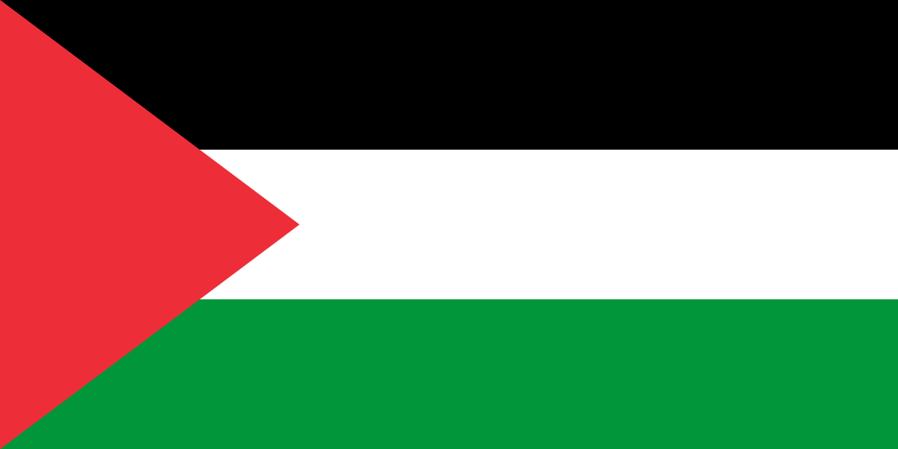

PALESTINE OVER THE PAST 75 YEARS
FROM THE RIVER TO THE SEA, PALESTINE WILL BE FREE!
FREE FREE PALESTINE!
This is the Palestinian Flag. The Red represents the many martyrs and sacrifices of the Palestinian people. The Black represents the oppression and persecution that Palestinians have suffered from for countless years. The White symbolizes peace and love, and the purity of the messages that every Prophet was sent with to the sacred land of Palestine. The Green means prosperity, blessings, and hope for a thriving future.